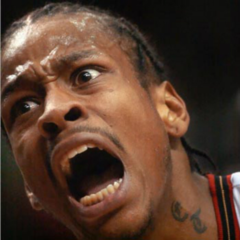

The Plight of the 76ers
The tears of Allen Iverson
The Philadelphia 76ers need your help. Floundering in a near constant state of tanking they have had two of the worst consecutive seasons in sports history. Just this past week they set a record for most consecutive regular season losses in sports history. Being so bad for consecutive years has caused a steep decline in revenue from merchandise and ticket sales. Viewership and general interest in the team are at all time lows and with a new TV deal coming up the 76ers will not have near the leverage in negotiations as in years past. The hedge fund millionaires who have run the organization into the ground quicker than they crashed the entire stock mocket may have made a mistake. They think this strategy will work but the truth is we need your help. Please rally around the team and bring us back from the brink of extinction. What if the team is moved to Vancouver? What if the send them to Kansas City? I know this isn't Eddie starring Whoopi Goldberg but it could happen. If you could please donate the small cost of season tickets we can potentially save our beloved team, and perhaps in a couple of years with shrewd drafting and free agent signings the team will be able to achieve a winning season.
Losses Piling Up
Year after year
The 76ers tanking strategy has been interesting and it sort of almost but not really keeps working. They have stockpiled draft picks and made trades and some seemingly back door deals to constantly be rebuilding. Here are some of the huge mistakes made during that time. The 76ers drafted Michael Carter Williams who played great and won rookie of the year, albeit undeservedly. The very next year they decided to trade him at the deadline for what may amount to a first round draft pick but may actually end up being nothing at all. So instead of developing a point gaurd to lead your team and create a culture of growth and chemistry building, we abandon our only exciting homegrown player and ship him to Milwauke where we will doubtlessly be haunted by his presence for years. Over the next few seasons we drafted several giagantic centers so we could have a log jam of our most talented players at the same position thus stunting all of their ceilings and growth before they ever had a chance. Oh I forgot that we traded our best player the year before that Jrue Holiday. He had become an allstar and was another great home grown player. Granted he has not been great since he left, he was still exciting and home grown and was building chemistry with our team at our most important position. One of the people we drafted was recieved in compensation for Jrue. Nerlens Noel, who is pretty awesome, sat out his whole first season with a horrible foot injury. Probably will be nagging and he will have problems the rest of his career. The next year they drafted Joel Embiid. He has not played in the NBA yet. He has had disasterous foot injuries and maybe he will never play again. This year they drafted Jahlil Okafor. Hes pretty good and has had some truly outstanding offensive performances. The concerns about Okafor are based on his off court issues. He has already been arrestsed three times. Twice for fighting fans of opposing teams and once for driving 120mph on the Benjamin Franklin bridge. Why doesn't this team have people in place to teach him this is wrong. He should just be home playing as himself on xbox or studying film or reading or anything other than driving fast and fighting people. Is he out drinking when this happens? I don't know. We need your help. If you see Jahlil Okafor out in Philadelphia or wherever do the following things. Be nice. Tell him he should probably go home. Help him get a cab or a town car or one of his friends who is sober to drive him home. We would also hope that the players on this team would be interested in practicing. However as we all know the 76ers have never been about practice. If I can't practice, I can't practice. It is as simple as that. It ain't about that at all. It's easy to sum it up if you're just talking about practice. We're sitting here, and I'm supposed to be the franchise player, and we're talking about practice. I mean listen, we're sitting here talking about practice, not a game, not a game, not a game, but we're talking about practice. Not the game that I go out there and die for and play every game last it's my last but we're talking about practice man. How silly is that? Now I know that I'm supposed to lead by example and all that but I'm not shoving that aside like it don't mean anything. I know it's important, I honestly do but we're talking about practice. We're talking about practice man. We're talking about practice. We're talking about practice. We're not talking about the game. We're talking about practice. When you come to the arena, and you see me play, you've seen me play right, you've seen me give everything I've got, but we're talking about practice right now.
76ers Break Worst Consecutive Streak in Sports History!

Jahlil Okafor Arrested!
Sadly Jahlil Okafor has been arrested for the third time in as many months. First for fighting. Then again for fighting. And now he was driving 120mph over the Benjamin Franklin Bridge. All of the 76ers money is invested in their executive's salaries and all of Jahlil's money is invested in Xbox games and fast cars. Please help us. With your donation of $25 you can receive front row season tickets to every home 76ers game. We need your help!